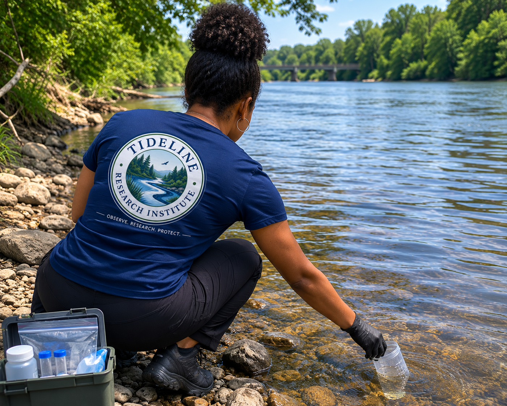

Research Division
Collecting scientific data to better understand and protect aquatic ecosystems.
Scientific Research
Healthy ecosystems begin with reliable observations. Field research allows scientists to document environmental conditions directly where they occur, creating a foundation for meaningful analysis and informed conservation decisions.
Whether monitoring water quality, documenting habitat conditions, recording wildlife observations, or collecting environmental samples, every field visit contributes valuable information about the health of an ecosystem.

Water sampling provides insight into the physical, chemical, and biological characteristics of rivers, streams, lakes, and wetlands. Samples may be analyzed for nutrients, dissolved oxygen, pH, conductivity, turbidity, metals, or other environmental indicators depending on project goals.
Scientific observations extend beyond laboratory results. Photographs, field notes, GPS locations, weather conditions, and habitat descriptions provide essential context that helps researchers understand how environmental systems change over time.
After collection, environmental samples may undergo laboratory testing to identify contaminants, evaluate water chemistry, and measure indicators of ecosystem health. Combining field observations with laboratory data allows researchers to build a more complete understanding of environmental conditions.
Tideline Research Institute combines field observations, environmental photography, scientific investigation, and public education to improve understanding of aquatic ecosystems and promote responsible environmental stewardship.